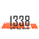
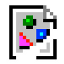
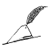
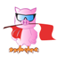
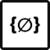
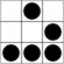

| Rank | Team | ping | erno | rpg | rfs | tattle | zork | rainbow | azurecoast | rost | ezpz | Offense | Defense | Score |
|---|
| 1 | Stratum 0
ID: 44 | good | good | good | good | good | good | down | broken | good | broken | 12.18%
(107950 points) | 2.21%
(5354 points) | 7.19%
|
| 2 | Lobotomy
ID: 21 | good | good | good | good | good | good | broken | good | good | broken | 9.07%
(80451 points) | 1.80%
(4357 points) | 5.44%
|
| 3 | FluxFingers
ID: 28 | good | good | good | good | broken | good | broken | broken | good | good | 8.44%
(74826 points) | 2.02%
(4906 points) | 5.23%
|
| 4 | Delusions of Grandeur
ID: 37 | good | good | good | good | good | good | broken | broken | good | broken | 7.82%
(69292 points) | 2.26%
(5493 points) | 5.04%
|
| 5 | dcua
ID: 5 | good | good | good | good | good | good | down | broken | good | broken | 5.23%
(46381 points) | 1.85%
(4484 points) | 3.54%
|
| 6 | HackerDom
ID: 2 | good | good | good | good | broken | good | down | broken | good | good | 4.89%
(43364 points) | 2.18%
(5286 points) | 3.54%
|
| 7 | PPP
ID: 57 | good | good | good | good | good | good | broken | broken | good | good | 4.56%
(40464 points) | 2.16%
(5245 points) | 3.36%
|
| 8 | CCCAC
ID: 42 | good | good | good | good | broken | good | broken | broken | broken | broken | 3.67%
(32506 points) | 2.25%
(5449 points) | 2.96%
|
| 9 | FAUST
ID: 52 | good | good | good | good | broken | good | broken | broken | good | broken | 3.48%
(30849 points) | 2.21%
(5365 points) | 2.85%
|
| 10 | Eindbazen
ID: 3 | good | good | good | good | good | good | broken | good | good | good | 3.38%
(30005 points) | 2.24%
(5441 points) | 2.81%
|
| 11 | SiBears
ID: 27 | good | good | good | good | broken | good | down | broken | good | good | 3.91%
(34686 points) | 1.64%
(3983 points) | 2.78%
|
| 12 | c00kies@venice
ID: 75 | good | broken | good | good | good | good | broken | good | broken | good | 2.64%
(23446 points) | 2.10%
(5099 points) | 2.37%
|
| 13 | More Smoked Leet Chicken
ID: 16 | good | good | good | good | good | good | down | good | good | good | 2.53%
(22443 points) | 2.15%
(5224 points) | 2.34%
|
| 14 | squareroots
ID: 6 | good | good | good | good | good | good | down | broken | good | down | 2.43%
(21511 points) | 2.23%
(5399 points) | 2.33%
|
| 15 | Hackademics
ID: 8 | good | good | good | good | down | good | broken | good | good | down | 2.57%
(22790 points) | 2.05%
(4963 points) | 2.31%
|
| 16 | ENOFLAG
ID: 50 | good | good | good | good | broken | good | down | broken | good | down | 2.01%
(17789 points) | 2.10%
(5090 points) | 2.05%
|
| 17 | 1338-offbyone
ID: 54 | good | good | good | good | good | good | down | broken | good | good | 1.74%
(15417 points) | 2.22%
(5375 points) | 1.98%
|
| 18 | Local Maximum
ID: 24 | good | good | good | good | good | broken | broken | broken | good | broken | 1.89%
(16792 points) | 1.98%
(4793 points) | 1.94%
|
| 19 | NoNameYet
ID: 65 | good | down | good | good | good | good | broken | broken | good | broken | 1.50%
(13340 points) | 1.99%
(4815 points) | 1.75%
|
| 20 | TryNSee
ID: 72 | good | good | good | good | good | good | broken | broken | good | broken | 1.21%
(10736 points) | 2.12%
(5148 points) | 1.67%
|
| 21 | [Censored]
ID: 58 | good | good | broken | good | good | good | down | broken | good | down | 1.12%
(9915 points) | 2.13%
(5167 points) | 1.62%
|
| 22 | alcapwn
ID: 9 | good | good | good | good | good | good | broken | good | good | good | 0.88%
(7772 points) | 2.25%
(5456 points) | 1.56%
|
| 23 | FIXME
ID: 46 | good | good | good | good | good | good | down | broken | good | down | 0.99%
(8803 points) | 2.12%
(5143 points) | 1.56%
|
| 24 | IngloriousMonkeys
ID: 25 | good | broken | good | down | broken | good | down | broken | good | good | 0.88%
(7831 points) | 2.13%
(5167 points) | 1.51%
|
| 25 | Magic-Hat
ID: 43 | down | down | down | good | down | down | broken | down | down | broken | 1.18%
(10426 points) | 1.82%
(4409 points) | 1.50%
|
| 26 | ufologists
ID: 11 | good | good | good | good | good | broken | down | broken | good | broken | 1.30%
(11542 points) | 1.68%
(4065 points) | 1.49%
|
| 27 | PeterPEN
ID: 7 | good | broken | broken | broken | broken | broken | down | broken | down | broken | 1.33%
(11759 points) | 1.60%
(3873 points) | 1.46%
|
| 28 | f0gd0gs
ID: 39 | good | good | good | good | broken | good | broken | broken | good | down | 0.76%
(6761 points) | 1.93%
(4691 points) | 1.35%
|
| 29 | vubar
ID: 22 | good | good | good | good | good | good | broken | broken | good | good | 0.65%
(5738 points) | 2.04%
(4951 points) | 1.34%
|
| 30 | Bushwhackers
ID: 19 | down | down | down | down | down | down | down | down | down | down | 1.10%
(9739 points) | 1.57%
(3812 points) | 1.34%
|
| 31 | Honeypot
ID: 40 | good | good | good | good | good | good | broken | broken | good | good | 0.46%
(4063 points) | 2.04%
(4958 points) | 1.25%
|
| 32 | W0PR
ID: 71 | good | good | good | good | good | good | broken | good | good | broken | 0.82%
(7259 points) | 1.61%
(3903 points) | 1.21%
|
| 33 | brooklynt overflow
ID: 10 | good | good | good | good | good | good | broken | broken | good | broken | 0.68%
(6029 points) | 1.71%
(4142 points) | 1.19%
|
| 34 | anesec
ID: 29 | good | broken | broken | broken | broken | broken | down | broken | good | broken | 0.52%
(4566 points) | 1.84%
(4457 points) | 1.18%
|
| 35 | H4xorPsch0rr
ID: 55 | down | down | down | down | down | down | down | down | down | down | 0.37%
(3268 points) | 1.91%
(4631 points) | 1.14%
|
| 36 | 0ldEur0pe
ID: 0 | good | good | good | good | good | good | broken | broken | broken | broken | 0.00%
(0 points) | 2.24%
(5440 points) | 1.12%
|
| 37 | BeginBazen
ID: 62 | good | good | good | good | good | good | broken | good | good | broken | 0.00%
(0 points) | 2.23%
(5410 points) | 1.12%
|
| 38 | NerdCrew
ID: 15 | good | good | good | good | good | good | broken | good | good | down | 0.41%
(3646 points) | 1.79%
(4331 points) | 1.10%
|
| 39 | bi0s
ID: 1 | good | good | good | good | broken | good | down | good | good | broken | 0.08%
(675 points) | 2.07%
(5016 points) | 1.07%
|
| 40 | WizardsOfDos
ID: 18 | down | down | down | down | down | down | down | down | down | down | 0.16%
(1409 points) | 1.80%
(4357 points) | 0.98%
|
| 41 | NULLify
ID: 60 | good | good | good | good | good | good | broken | broken | good | good | 0.16%
(1457 points) | 1.77%
(4281 points) | 0.96%
|
| 42 | d3v1l
ID: 66 | good | good | good | good | good | good | broken | broken | good | broken | 0.08%
(723 points) | 1.79%
(4332 points) | 0.93%
|
| 43 | helloworld
ID: 64 | good | good | good | good | good | good | broken | good | good | broken | 0.00%
(0 points) | 1.76%
(4267 points) | 0.88%
|
| 44 | ipwnu
ID: 30 | good | down | broken | down | down | broken | down | down | down | down | 0.00%
(0 points) | 1.76%
(4260 points) | 0.88%
|
| 45 | NULL Life
ID: 4 | good | broken | good | good | broken | good | broken | broken | good | broken | 0.04%
(388 points) | 1.63%
(3961 points) | 0.84%
|
| 46 | sutegoma2
ID: 67 | good | good | good | good | good | good | broken | good | good | broken | 0.00%
(0 points) | 1.63%
(3949 points) | 0.81%
|
| 47 | RPISEC
ID: 23 | good | good | good | good | good | good | broken | broken | good | broken | 0.29%
(2605 points) | 1.30%
(3149 points) | 0.80%
|
| 48 | Doz
ID: 74 | good | broken | broken | broken | down | broken | down | broken | down | broken | 0.00%
(0 points) | 1.55%
(3769 points) | 0.78%
|
| 49 | Hacknam Style
ID: 47 | down | down | down | down | down | down | down | down | down | down | 0.52%
(4631 points) | 0.99%
(2400 points) | 0.76%
|
| 50 | Tracer Tea
ID: 14 | down | down | down | down | down | down | down | down | down | down | 0.00%
(0 points) | 1.33%
(3234 points) | 0.67%
|
| 51 | Brains_404
ID: 61 | good | good | good | good | broken | good | broken | good | good | broken | 0.06%
(522 points) | 1.26%
(3050 points) | 0.66%
|
| 52 | Badger Wolves
ID: 49 | good | good | good | good | good | good | broken | broken | good | broken | 0.00%
(0 points) | 1.04%
(2522 points) | 0.52%
|
| 53 | tasteless
ID: 34 | down | down | down | down | down | down | down | down | down | down | 0.00%
(0 points) | 0.99%
(2405 points) | 0.50%
|
| 54 | 0xCC
ID: 63 | down | down | down | down | down | down | down | down | down | down | 0.00%
(0 points) | 0.59%
(1442 points) | 0.30%
|
| 55 | PuN1sh3r
ID: 53 | good | good | good | good | good | good | broken | broken | good | broken | 0.00%
(0 points) | 0.20%
(497 points) | 0.10%
|
| 56 | Kernel Sanders
ID: 13 | good | down | down | down | down | down | down | down | down | down | 0.00%
(0 points) | 0.04%
(107 points) | 0.02%
|
| 57 | PiggyBird
ID: 69 | down | down | down | down | down | down | down | down | down | down | 0.00%
(0 points) | 0.03%
(79 points) | 0.02%
|
| 58 | gn00bz
ID: 35 | down | down | down | down | down | down | down | down | down | down | 0.00%
(0 points) | 0.03%
(67 points) | 0.01%
|
| 59 | Caonima
ID: 56 | down | down | down | down | down | down | down | down | down | down | 0.00%
(0 points) | 0.02%
(45 points) | 0.01%
|
| 60 | The DHARMA Initiative
ID: 33 | down | down | down | down | down | down | down | down | down | down | 0.00%
(0 points) | 0.00%
(5 points) | 0.00%
|
| 60 | MadHatters
ID: 36 | down | down | down | down | down | down | down | down | down | down | 0.00%
(0 points) | 0.00%
(5 points) | 0.00%
|
| 60 | xbios
ID: 17 | down | down | down | down | down | down | down | down | down | down | 0.00%
(0 points) | 0.00%
(5 points) | 0.00%
|
| 61 | Baghali
ID: 31 | down | down | down | down | down | down | down | down | down | down | 0.00%
(0 points) | 0.00%
(4 points) | 0.00%
|
| 61 | Garage4Hackers
ID: 45 | down | down | down | down | down | down | down | down | down | down | 0.00%
(0 points) | 0.00%
(4 points) | 0.00%
|
| 61 | ind
ID: 51 | down | down | down | down | down | down | down | down | down | down | 0.00%
(0 points) | 0.00%
(4 points) | 0.00%
|
| 61 | Decepticrons
ID: 70 | down | down | down | down | down | down | down | down | down | down | 0.00%
(0 points) | 0.00%
(4 points) | 0.00%
|
| 61 | CLGT
ID: 26 | down | down | down | down | down | down | down | down | down | down | 0.00%
(0 points) | 0.00%
(4 points) | 0.00%
|
| 61 | Glider Swirley
ID: 41 | down | down | down | down | down | down | down | down | down | down | 0.00%
(0 points) | 0.00%
(4 points) | 0.00%
|
| 61 | Rooters
ID: 73 | down | down | down | down | down | down | down | down | down | down | 0.00%
(0 points) | 0.00%
(4 points) | 0.00%
|
| 61 | Team Reboot
ID: 48 | down | down | down | down | down | down | down | down | down | down | 0.00%
(0 points) | 0.00%
(4 points) | 0.00%
|
| 61 | [TechnoPandas]
ID: 12 | down | down | down | down | down | down | down | down | down | down | 0.00%
(0 points) | 0.00%
(4 points) | 0.00%
|
| 62 | BAD_Magic
ID: 68 | down | down | down | down | down | down | down | down | down | down | 0.00%
(0 points) | 0.00%
(3 points) | 0.00%
|
| 62 | InKryptz
ID: 59 | down | down | down | down | down | down | down | down | down | down | 0.00%
(0 points) | 0.00%
(3 points) | 0.00%
|
| 62 | sw0rdf1sh
ID: 32 | down | down | down | down | down | down | down | down | down | down | 0.00%
(0 points) | 0.00%
(3 points) | 0.00%
|
| 62 | BUILDS
ID: 20 | down | down | down | down | down | down | down | down | down | down | 0.00%
(0 points) | 0.00%
(3 points) | 0.00%
|
| 62 | p03p0wn
ID: 38 | down | down | down | down | down | down | down | down | down | down | 0.00%
(0 points) | 0.00%
(3 points) | 0.00%
|